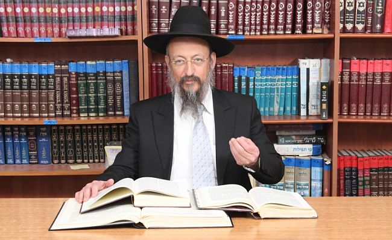

מה מרגיש דיין שמגיע לבית הכנסת השכונתי וחוטף מקלחת צוננין מבעל-דין שהפסיד אצלו ב
מה מרגיש דיין שמגיע לבית הכנסת השכונתי וחוטף מקלחת צוננין מבעל-דין שהפסיד אצלו בעבר? כמה השפעה יש ל’רושם ראשוני’ של הדיין כאשר הוא נפגש עם בעלי דין? מה המאפיין דיין חסיד חב”ד? ומהן התכונות הנדרשות ממי שרוצה להיות דיין בישראל? * לקראת שבת פרשת משפטים, פגשנו את הגה”ח הרב אפרים בוגרד, דיין ותיק ומנוסה
מה מרגיש דיין שמגיע לבית הכנסת השכונתי וחוטף מקלחת צוננין מבעל-דין שהפסיד אצלו בעבר? כמה השפעה יש ל’רושם ראשוני’ של הדיין כאשר הוא נפגש עם בעלי דין? מה המאפיין דיין חסיד חב”ד? ומהן התכונות הנדרשות ממי שרוצה להיות דיין בישראל? * לקראת שבת פרשת משפטים, פגשנו את הגה”ח הרב אפרים בוגרד, דיין ותיק ומנוסה בבית דין רבני חב”ד ורב קהילת חב”ד בשכונת רמות ב’ בירושלים, לשיחה כנה ונוקבת על תפקידו של דיין בישראל, על הקשיים ועל האתגרים, ועל תחושת השליחות בפסקי דין בתוך קהילת חב”ד * מרתק

כשביקשתי לראיין את הרב בוגרד, רשמתי לעצמי לשאול אותו לגבי אותם רגעים וכיצד הרגיש. לא התאפקתי, והזכרתי לו את המעשה מיד בתחילת שיחתנו.
איך הרגשת אז?
“אני זוכר בהחלט את המקרה הזה, אבל לא התרגשתי. דיין אמור להיות מחוסן. באותו מקרה היו פרטים שהיו מוצנעים מעיני הציבור, וכמובן לא יכולתי להשיב לו מילה. אותו בעל דין ידע שלא אסגיר פרטים וניצל זאת כדי לעמוד בבית ה’ ולהשמיץ אותי ברבים. זה לא קורה הרבה, אבל היו כמה מקרים כאלה, וזה לא מפריע לי. חסינות אמורה להיות חלק מתכונות האופי הנדרשות מדיין”.
•
“ואלה המשפטים אשר תשים לפניהם”, פרשתנו עוסקת בדינים ומשפטים המתנהלים בין בני האדם; מחלוקות ודיונים העולים כתוצאה מדפוסי התנהגות שונים ומשונים, אשר לא פעם מגיעים להכרעה בפני הדיינים הניצבים בעדת א–ל, והם דנים ומכריעים הכרעות שאינן פשוטות כלל ועיקר.
זו הזדמנות נאותה להיפגש לשיחה פורמלית, אך כנה, עם הגה”ח הרב אפרים בוגרד, כמי שדן בבית דין רבני חב”ד בארץ הקודש ומועמד מוביל למשרת דיינות במסגרת בתי הדין הרבניים, זאת לצד תפקידו כרב קהילת חב”ד בשכונת רמות ב’ בירושלים.
ברשותכם, בטרם נתחיל בשיחה, הייתי מבקש לחדד תחילה את ההבדלים בין רב בישראל לבין דיין.
“רב ודיין אלו הם שני עולמות שונים לחלוטין, למרות שבנקודות מסוימות הם נוגעים זה בזה, אך במהותם של דברים, הם שונים. רב עונה על שאלות באורח–חיים וביורה דעה; דיין, בנוסף לזה, חייב לדעת גם אבן–העזר וחושן–משפט. דיין חייב לדעת היטב את כל ארבעת חלקי השולחן ערוך מהחל ועד כלה.
“עם זאת, עיקר עיסוקו של דיין הוא בדיני ממונות ודינים הנוגעים למעמד האישי של אדם כמו יוחסין, גיטין, קידושין, חליצה, כתובות, ועוד רבות. אלו שאלות שרב אינו עוסק בהם”.
כידוע, הרבי עודד את החסידים, ובפרט את השלוחים להיות רבנים בישראל, האם יש התייחסות גם לדיינות?
“בוודאי. באותו מכתב ידוע ששיגר הרבי לשלוחים בו הוא מורה להם להשתלם במקצועות שונים, הוא מונה את הדיינות כראשונה ברשימה, מה שמעיד על החשיבות שהרבי מייחס לכך”.
ההיסטוריה החב”דית בארץ ישראל מלמדת כי במשך השנים, חסידים רבים השתלמו בלימודי רבנות ועשרות מהם קיבלו משרות חשובות ונכבדות של רבני ערים ושכונות, ואולם בתחום הדיינות - כמעט ולא נוספו בשנים האחרונות דיינים חב”דיים לרשימת דייני הרבנות הראשית לישראל. איך אתם מסבירים את הפערים?
“למעשה, לפני עשרות שנים הרבי רצה שהרב דוד חנזין ע”ה ימונה כדיין”, מגלה הרב בוגרד טפח הקשור להיסטוריה. “הרבי הטיל את המשימה על הרב זוין, אך הוא לא הצליח לפעול זאת בגלל התנגדות חריפה מצד גורמים שונים”.
בשיחה שקיימתי לקראת הראיון הזה עם גורמים שונים, עולה תמונה כי יש גורמים החוששים מפני דיין חב”די. עולם הדיינות הצמיח מנהיגים בעלי השפעה על הציבוריות הכללית והחרדית בארץ ישראל כדוגמת הגאונים הרב אלישיב, הרב עובדיה יוסף, הרב מרדכי אליהו. אלה ועוד, זכרונם לברכה, היו דמויות שעיצבו את מסגרות העולם התורני–הלכתי בארץ ישראל דווקא ממקומם כדיינים ולא כרבנים. מסתבר שקולו של דיין יותר נשמע מאשר קולו של רב בישראל. כוחו הסגולי מכריע יותר.
אינני מבין, הלא הרבנים הם אלו שנפגשים יום יום עם ‘עמך’ באירועים שונים, במשרדי הרבנות, באזכרות ולהבדיל, בשמחות. ההשפעה שלהם ישירה, בניגוד לדיינים שיושבים בהיכל הדין ועסוקים בדין…
“אני מסכים איתך”, אומר הרב בוגרד, “אפשר לומר שהשפעתו של רב היא יותר ‘פנימית’ בעוד השפעתו של דיין היא יותר בדרך ‘מקיף’. אבל אם דיין מחליט למנף את ההשפעה שלו ולרדת לציבור, האמירה שלו יותר משמעותית ויותר משפיעה. זו המציאות”.
הרב בוגרד זהיר והוא בורר את מילותיו בקפידה רבה: “דיין חסיד חב”ד שינק משחר נעוריו את האחריות לכלל–ישראל, למרות שהוא טרוד בדיונים שמגיעים לפניו, הוא ניגש בגישה יותר פתוחה.
“זו כנראה גם הסיבה שהרבי ביקש שיהיו דיינים מקרב חסידי חב”ד. מלבד העובדה שיש בדור שלנו כל כך הרבה בעיות שצריכות דעה ישרה ויראת שמים, הרי שהרבי רוצה שהגישה תהיה מחברת יותר.
“פעמים רבות, אנשים שמגיעים לבית הדין, באים ממקום הכי כואב בחיים שלהם; אלו אנשים עם חלומות שהתנפצו ועולם שחרב בעדם. הם נמצאים באחד מרגעי השפל של חייהם. דיין חב”די יכול להסתכל על האנשים הללו בגובה העיניים ולהבין לעומק את המקום בו הם נמצאים.
“אתן לך דוגמה [בטשטוש מוחלט של פרטים, כמו גם בדוגמאות נוספות בהמשך הראיון - מ.ז.]: היה מקרה מסוים שבעל לא רצה לתת גט לאשתו והוא נעלם מהבית למשך ארבע שנים. בשלב מסוים הצליחו להביא אותו לבית הדין, ישבתי אתו כמה שעות עד שהשתכנע לתת גט. חלפו כמה שנים ונפגשנו שוב, והוא אמר לי ‘אתה היחיד שהבנת מה אני מרגיש’. לחב”דניק יש יכולת טבעית להתחבר יותר עם השני ולהבין את המצוקה שלו, ולכן הגישה תהיה בהתאם.
“כמה דקות לפני שנכנסת לכאן שוחחתי עם בני זוג שנישואיהם עלו על שרטון כמה חודשים בלבד לאחר חתונתם. הזיווג לא עלה יפה. הם החליטו להיפרד לא לפני שכל אחד מהמחותנים ביקש ‘להוציא את העיניים’ לזולתו. זה יושב על מקום של רגש חזק, כאוב ופגוע. שכנעתי את שני הצדדים להזדרז במתן הגט ולסיים את הפרק הזה בחייהם. ככל שיקדימו לעשות זאת - כך ייטב להם.
“אתה צריך להתחבר עם השני ולדבר עמו בשפה שלו, ורק כשהוא מרגיש שאתה אתו, אתה יכול להוביל אותו למקום הנכון גם מבחינתו. נחזור לדוגמה שהבאתי קודם - בעל שמעגן את אשתו, הדבר הטוב ביותר מבחינתו (לא רק מבחינתה) שהוא יתן גט, כי אחת החוויות הקשות של אדם, כאשר הוא נתקע ולא מסוגל להשתחרר.
“כך בדיני אישות וכך בדיני ממונות - דיין טוב יודע להוביל את הצדדים למקום טוב ונכון יותר לשניהם. כשמונים אחוז מדיני התורה שאני יושב בהם, הצדדים בסופו של דבר מגיעים לפשרות מעצמם. זה המקום של דיין חסיד חב”ד - הוא רגיש יותר לנשמה ולנפש של הזולת וממילא הוא יודע איפה נמצא ‘כפתור ההפעלה’ שיכול להניע אדם לפעול בצורה נכונה.
“כך גם בבית דין רבני חב”ד, יש אנשים שנדבר איתם בשפה אחת ויש אנשים מתוך אותה קהילה שנדבר איתם בשפה אחרת, כל אחד בהתאם למה שהוא”.
דיין צריך להכיר את נפשם של בעלי הדין
הרב בוגרד, כאמור, אינו רק רב קהילה, אלא גם משמש כדיין בבית דין רבני חב”ד. ההשפעה שלו חרגה מזה כבר את הגבולות הטבעיים, והוא מקבל שאלות להכרעה מכל רחבי העולם, בעיקר בנושאי דיינות כמו שאלות של פסולי חיתון או בעיות של ממונות.
האם אפשר לשאול אחת ולתמיד - מה עובר לדיין בראש כאשר מגיעים לפניו שני בעלי דין? האם יש משקל ל’התרשמות ראשונית’?
“כתוב ‘שמוע בין אחיכם ושפטתם צדק בין איש ובין אחיו’. דיין צריך לשמוע את שני הצדדים ולתת להם את כל ההזדמנות להציג את דבריהם. יחד עם זאת, לדיין יש את הכח לדעת מי המתדיין לפניו. הידיעה הזאת היא מפתח חשוב בכל הגישה בדיני תורה. דיין טוב, המטרה שלו היא להביא לידי כך ששני הצדדים יתפשרו לבד, בניגוד, למשל, לבית משפט, שם הפסיקה היא חד–משמעית. דיין טוב רואה ומרגיש את האנשים שעומדים לפניו, ועל פי זה הוא יודע לפעול בגישה נכונה כדי לגרום לצדדים לצאת מבית הדין ברוח טובה”.
אפשר לקבל דוגמה?
“לפני שנים רבות הגיעו אלי שני אחים בסכסוך שהיה ביניהם. אחד מהם היה לארג’ בטבעו, והשני לא. בשלב מסוים פניתי לאח שאינו לארג’ ואמרתי לו: ‘אתה הרי יש לך לב רחב ומפרגן. האם היית מוותר לאחיך כך וכך?’ הוא כמובן לא יכול לומר שאין לו לב רחב… והוא השיב מיד: ‘בוודאי שאני מוכן לוותר כך וכך”. ואז אחיו הלארג’ הגיב: ‘אם כך, אני מוכן לוותר לו על זה ועל זה’. כך התחילו שניהם להראות האחד לרעהו כמה הם מוכנים לוותר… לי לא נותר אלא לשבת ולשתוק עד ששניהם הגיעו להסכמה. תקופה לאחר מכן הם התקשרו להגיד שהם הבינו את התרגיל שעשיתי, אך בהחלט שמחו שבזכות כך יכלו לחזור לחיות כמו אחים. פשוט היה צריך לתת להם סולם כדי לרדת מהעץ עליו טיפסו”.
אתם מדברים הרבה על פשרות והסכמה. אם כן, כמה משקל יש לדין היבש המופיע בשולחן ערוך?
“כל עוד הצדדים מציגים את דבריהם ואתה אינך יודע עדיין מהו הדין, אתה יכול לחתור לפשרה. אולם ברגע שאתה יודע מה הדין המפורש, אסור לך לעשות פשרה”.
כמו תמיד, בפיו של הדיין המנוסה, סיפורים מהחיים שהופכים את הכל למוחשי יותר:
“הגיעו אלי פעם שני אנשים מכובדים שעשו ביניהם עסקה גדולה שהתבססה על אימון רב שרחשו ביניהם ולפיכך לא רשמו שום נייר שמסכם את הפרטים. קרה מה שקרה והתגלעה ביניהם מחלוקת. שניהם אנשים אינטליגנטיים, משופשפים וחדים שיודעים את המלאכה גם בהליך המשפטי. איכשהו הם הגיעו אלי. הם החלו להציג את טענותיהם, אך מהר מאד הבנתי שלא אוכל להגיע לחקר האמת, מה באמת היה בהתחלה, כיוון שאין ביניהם שום סיכום כתוב, וכאן זה מילה מול מילה. מאידך - כיוון ששניהם אינטליגנטיים מספיק, הם ידעו איך להציג את הטענות בצורה שתועיל להם.
“מהר מאד עצרתי את התהליך ואמרתי: ‘אין ביניכם כל סיכום כתוב ולפיכך לא אוכל להגיע לחקר האמת. אני מניח שהדבר האחרון שרציתם, זה להגיע אלי. אני מבין שעשיתם אפוא הכל כדי לא להגיע לכאן, ובוודאי היו לכם כמה פתרונות שהעליתם כדי לפתור את העניין, אך הם לא צלחו. הבה נתחיל מהסוף, וארצה לשמוע מה הפתרונות שהיו לכם ולמה הם נפלו. השניים הסכימו להצעה, ותוך כדי העלאת הפתרונות האפשריים, הבנתי מה היה ביניהם מלכתחילה. בסופו של דבר לקחתי את אחד הפתרונות שהם העלו, שכללתי אותו קצת, הוספתי עוד כמה ביטחונות, והצעתי להם את זה כהצעה מסכמת. הם חשבו על זה כדבר אפשרי, וכך הסתיים הדיון.
“מהמקרה הזה אתה למד, שאין דבר כזה שדיין יודע כבר בהתחלה כיצד יסתיים הדין, אבל כן חשוב לרדת ממקומך כדיין ולהבין את האופי של המתדיינים, ועל פי האופי שלהם להוביל את הדיון למקום שבו הם ירצו לסיים בטוב”.
לחוות סייעתא דשמיא גלויה
על הפסוק “אלוקים ניצב בעדת א–ל” אומרים חז”ל שהקב”ה נמצא עם הדיינים בשעת הדין. כיצד אתם רואים אה את הסייעתא דשמיא במהלך הדיונים?
“אני בהחלט יכול להעיד שאני רואה בכל פעם מחדש עזרה משמים, בכל פעם בדרך אחרת.
“אספר לך סיפור: פעם הגיע אלי לדיון מקרה שעסק בנושא של שררה. זה נושא רגיש שיש בו הרבה רגשות. הדין קובע כי אסור להוריד אדם מתפקיד השררה שבו הוא אוחז.
“למחרת בבוקר הייתי במקווה ולא הרגשתי טוב. נכנסתי אפוא לבית כנסת סמוך כדי לנוח כמה דקות. בינתיים ניגשתי לארון הספרים ופתחתי ספר באופן אקראי. הספר היה שו”ת ‘באר יצחק’ ובדף שפתחתי הייתה תשובה מאת רבי יצחק אלחנן ספקטור. הגיע לפניו מקרה דומה העוסק בנושא של ירושת שררה, והוא פוסק שבמקרה הספציפי זה, לא חל הדין האמור…
“כעת תגיד אתה, מה הסיכוי שלמחרת הדין שהגיע לפניי, אפתח בדיוק ספר לא מצוי, ואמצא בו תשובה העוסקת בדיוק בעניין הזה… מקרה זה, ועוד מקרים דומים שאירעו לי, מעיד על כך שהקב”ה נמצא עם הדיינים.
“לפעמים תוך כדי הדיון אתה אומר דברים ששמו בפיך, ומרגיש סייעתא דשמיא. כמה שתהיה חכם, פיקח ונבון - בלי סייעתא דשמיא אי אפשר לזוז”.
כדיין בבית הדין של חב”ד, אלו דברים לדעתך צריכים חיזוק יותר?
“דבר ראשון צריך לדעת שהעובדה שיש אנשים שלא מסתדרים ביניהם, זה דבר בהחלט נורמלי. השאלה היא האם הכל נעשה בגבולות הגזרה המותרים או לא”.
כלומר?
“גבולות הגזרה המותרים - זה כאשר יש חילוקי דעות וכל אחד מעלה את הטענות שלו ובית הדין שומע את הטענות של שני הצדדים. לא תמיד זה נעים, אבל זה בסדר גמור. אבל קורה שלפעמים אנשים עוברים את הגבולות המותרים במעשים שלא ייעשו, כמו זיופים ורמאויות וכדו’.
“ולעצם שאלתך: פגשתי לא מעט מקרים שבהם אנשים, כולל חסידים ויראי שמים, שעשו הסכמי ממון (בעיקר בזיווג שני) או צוואות שהם לא על פי דיני תורה. במילים פשוטות, הסכם ממון או צוואה שלא נכתבו על פי דיני תורה, אינן תופסות. יותר מכך: גם אם אדם חתם על הסכם כזה, ולבסוף מתגלה שההסכם נכתב שלא על פי תורה, אם הוא יחליט להתנגד על מה שהוא עצמו חתם - הוא יכול בדין תורה להפר את חתימתו, כיוון שההסכם אין לו שום תוקף. לכן חשוב לעורר את הציבור, לא מספיק להתייעץ עם עורך דין, אלא צריך להתייעץ עם דיין האם הדברים נעשים על פי דין תורה או לא. בעיות מעין אלו מתגלות בהרבה שטחי חיים, כמו בדיני ריבית, שותפויות וכו’.
“נקודה נוספת שצריכה חיזוק - האיסור ללכת לערכאות. צריך להפסיק עם התופעה הזאת לגמרי!”
יש אנשים שחשים כי בית משפט יעשה יותר דין צדק מאשר בית דין ויתן יותר סעד למימוש פסקי דין…
(בנחרצות): “זה ממש לא נכון”.
הרב בוגרד שותק שתיקה ארוכה, ומתופף באצבעותיו על השולחן. ניכר כי הנושא מסעיר אותו, אך הוא מסיבותיו שלו בוחר שלא להרבות במילים בנושא הזה.
אכן, מדובר בנושא רב–משמעות שהטריד את מנוחתם של דיינים גדולים וטובים ביובל השנים האחרונות. כך למשל פוסק הראשל”צ הרב עובדיה יוסף באופן נחרץ, כי מי שהולך לערכאות עובר על שני איסורים: האחד איסור על עצמו, והשני - הכשלת השופט היהודי…
כשאני מזכיר את הפסק הזה באוזניו של הרב בוגרד, ניכר בו כי הוא מכיר אותו. לאחר שתיקה הוא מבכר רק לומר “יש שולחן ערוך ויש תשובות מפורשות של הרבי בעניין - מי שפועל שלא בהתאם, מעיד על עצמו עד כמה הוא ירא שמים ועד כמה הוא חסיד…”
כשאני בוחר לשאול שוב לגבי ה’שיניים’ שיש לבית דין לאכוף את הפסקים שלו, מסכים הרב בוגרד לפרט: “לדיינים יש את האמצעים לנטרל גם סרבני דין. אמנם מלכתחילה צריך לגשת לדין באופן של חכמה ודיפלומטיה, כך שגם בעל הדין המחויב, יסכים לקיים את פסק הדין; אבל אם לא, יש בידי הדיינים אמצעים מסוימים.
“אספר לך על מקרה שעולה כרגע בראשי: לפני שנים רבות היה אדם חשוב ביותר בקהילתו שלווה מרעהו סכומי כסף כמה פעמים, ובכל פעם החזיר לו. לאחר שנוצר אימון, הוא נטל ממנו הלוואה נוספת בסכום כסף עתק, ואז הוא עקץ אותו וסירב להחזיר את הכסף. הנושא הגיע לידי בית הדין, והלה טען בסוג של התנשאות: ‘אני מודה כי הלוויתי אבל אין לי כסף להחזיר, מה תוכלו לעשות לי?!’ מסתבר שהלה תכנן הכל, ודאג להעביר מראש את הדירה ואת מכוניתו על שם אנשים אחרים; שום נכס משמעותי לא היה רשום על שמו ולא הייתה אפשרות לגבות את הכסף.
“כשראיתי שכך, אמרתי לו: ‘אני מבין שאין לך מה להשיב, אשר על כן, אוציא כעת פסק דין ובו אכתוב, שהתברר לנו כי פלוני תכנן עקיצה לחברו במאות אלפי שקלים, והלה לא ראוי לכהן בתפקידו המכובד’. בהתחלה הוא היה משועשע ואמר לי ‘נראה אותך’, אבל אחרי כמה דקות, כשהבין שאני מתכוון לזה, הוא נהיה רציני. באותו שלב בחייו, טרם חיתן את ילדיו, הוא היה טרוד לאסוף כסף למוסדותיו, והוא גם נהנה מהכבוד שכולם רחשו לו. בקיצור, היה לו הרבה מה להפסיד ממכתב מעין זה… שלושה חודשים לאחר מכן הוא החזיר את כל הסכום. הכסף שכב בחשבון בנק בחו”ל…
“זה לא מקרה בודד, אלא יש עוד מקרים דומים, כל אחד עם הגוון שלו, שבהם בית דין מצאו את הדרך לאכוף את פסק הדין. במקרים מסוימים, אנו גם מתירים ללכת להוצאה לפועל כדי לממש חובות שאי אפשר לגבותם בדרך אחרת.
“כמו שאמרת קודם, הקב”ה נמצא עם הדיינים ונותן להם את הכח לא רק לפסוק, אלא גם למצוא את הדרך שבה בעלי הדין יסכימו לבצע את הפסק גם אם הוא לא לטובתם”.
מסלול דיינות רב–אתגרים
בשנים האחרונות חלה עליה מבורכת בלימודי דיינות בקרב כוללים חב”דיים ברחבי הארץ. עשרות רבות של אברכים, לאחר תום לימודי ה’סמיכה’ לרבנות, ממשיכים בלימודי אבן העזר וחושן משפט. הם משקיעים את עצמם בעומק הסעיפים והאותיות הקטנות של ה’נושאי כלים’, ויורדים לעומקה של הלכה.
כדיין וותיק, הרב בוגרד מברך על המגמה הזאת, והוא מסביר, את המסלול לדיינות: “כדי להיות דיין, צריך לעמול בשני מישורים. הראשון הוא אוצר ידע. צריך ללמוד ולהיבחן. השני - צריך גם אופי ותכונות של דיין”.
מהן התכונות הנדרשות?
“ראשית כל סבלנות ללמוד ולשנן כמות אדירה של ידע. צריך גם אופי לחתוך דברים מבלי להתפעל מה יגידו. מלבד הידע העיוני, צריך גם להיות סוג של פסיכולוג, עובד סוציאלי, מגשר ועוד כהנה מקצועות… על הדיין תוך כדי דיון להכיר היטב את הנפשות הפועלות וכן את המציאות בשטח. דיין שלא מכיר את הוויות העולם ואיך דברים מתנהלים, לא יכול להיות דיין. הוא חייב להבין מהר מאד מי בעד מי, ומי נגד מי, ואיך הדברים עובדים.
“בתחילת שיחתנו שאלת על ההבדל בין רב לדיין”, מטעים הרב בוגרד. “רב מטבעו צריך להיות נחמד ומרוצה לקהל, בעוד שהדיין אסור לו להיות מרוצה לקהל ואסור לו להיות נחמד. התפקיד שלו הוא לפסוק פסיקה החלטית. נכון שבתוך זה ראוי שהדיין יכניס רכות מסוימת, אבל עם זאת, דיין שהוא רך בטבעו, לא יכול להיות דיין.
“בנוסף ללימודים ולחכמה הנדרשת, על דיין עתידי לעשות ‘שימוש’. אדם שסיים את לימודי הדיינות בהצטיינות, לא יכול למחרת להתחיל לדון. עליו להיות סמוך על שולחנם של דיינים וותיקים וללמוד איך הדברים מתנהלים ו’להשתפשף’ רבות”.
הרב בוגרד עצמו עשה ‘שימוש’ אצל הגאונים הדיינים הרב אליעזרוב, הרב רבינוביץ’, וכן דיינים נוספים. הוא ישב שעות רבות בהרכבים שונים ולמד מקרוב כיצד הדברים מתנהלים.
למעשה, כבר בהיותו אברך צעיר, ראה הרב בוגרד את עצמו בשליחות חיים להתעטר בנזר הדיינות. חבריו לכולל עמם שוחחתי כהכנה לכתבה, מוסיפים ומספרים כי הם זוכרים את הרב בוגרד יושב קרוב לעשר שנים ומתמיד בלימוד ובשינון. אחד מחבריו הקרובים מספר כי הוא יודע שאפשר היה לראות אותו יושב באחד מבתי הכנסת בשכונה הרבה אחרי חצות, ושוקד על האותיות הקטנות.
במשך השנים פילס לעצמו דרך ישרה בעולם הדיינות. גישתו החכמה - מחד, והפסיקתית - מאידך, הקנו לו שם נכבד בעולם הדיינות, ושמו יצא לתהילה בקרב עולם הדיינים. גם דיינים וותיקים ממנו מבקשים להתייעץ איתו במקרים סבוכים שמגיעים לשולחנם ומבקשים לשמוע את דעתו ואת זווית ראייתו הייחודית.
בסיבוב הקודם לבחירות דיינים לבתי הדין הרבניים, עלה שמו כמועמד שזוכה לתמיכה רחבה, אך למרבה הצער, המינוי לא יצא לפועל רק בשל היותו חסיד חב”ד. מי שעומד כעת בראש הוועדה לבחירת דיינים, השר יובל שטייניץ, הבטיח חגיגית כי יעשה הכל שהדיין החב”די יקבל את התפקיד הנכסף. גורמים בחב”ד המעורים בנעשה מספרים, כי השר שטייניץ אכן פועל ביושר ובמקצועיות מתוך ראיה כוללנית, מתוך מטרה להכניס נציג חב”ד לעולם הדיינות ובכך לתקן עוול היסטורי.
גם בעולם הדיינות מתחילים לטעום גאולה
השיחה עם הרב בוגרד הפכה להיות מרתקת יותר ויותר. היה מעניין לשמוע את דעתו בשלל נושאים מנקודת זווית ראייתו כדיין חסידי. כך למשל שוחחנו על נושא של הסכם ממון בקרב זוגות (“זה רצוי וטוב, אם זה לא נעשה, אז נוצרות בהמשך בעיות רבות. שמעתי מר’ מענדל פוטרפס את הפתגם ‘עדיף לעשות הסכם כמו גוי כדי לחיות כמו יהודים’”). שוחחנו גם על החשיבות שכל אברך יתמיד בלימוד (“קח לדוגמה שליח שהוא בעל ידע רב, ההשפעה שלו הרבה יותר חזקה ממי שאין לו מספיק ידע. רואים זאת במוחש. הציבור יודע להבחין בין מי שחי את הדברים לבין מי שלא”).
כשהיה צריך לסיים את הראיון, בחרתי לסיים אותו בהקשר של דיינות וגאולה:
בשיחת שבת פרשת שופטים תנש”א הרבי דייק בלשון הייעוד “אשיבה שופטייך כבראשונה, ויועצייך כבתחילה”, שבימות המשיח לא יהיה צורך ב’שוטרים’ למימוש פסק הדין, אך לאידך יהיו ‘יועצים’. האם אתם רואים היום בבתי הדין גישה של ‘ייעוץ’ כטעימה מהייעוד הגאולתי?
“טבע האנשים של היום השתנה לגמרי מכפי שהיה בעבר. פעם הייתה סמכות ואנשים היו מקבלים אותה ללא עוררין. היה מושג של רב, מורה, שר או אפילו ראש ממשלה, ואנשים כופפו את עצמם מפניהם. היום אנשים כבר לא מכבדים סמכויות, אלא רוצים למה ומדוע. אנשים כן מכבדים אדם שמדבר אל לבם ומבין אותם.
“כפי שאמרת בשאלתך, ההבדל בין שופט ליועץ, ששופט פוסק פסקו וכך צריך לבצע, בעוד היועץ נותן לזולתו להבין למה צריך לעשות כך וכך, וההוא עושה כי הוא הבין ולא רק בגלל שאמרו לו לעשות. אנשים רוצים לעשות לא רק מתוך קבלת עול אלא גם בגלל שהשכל האנושי שלהם מבין ויודע. אני חושב שעל פי דברי הרבי, זה כבר חלק מהטעימה של ימות המשיח”.